1007FTexSystem
product: flux org: metamation tags: [metamation, knowledge-base, flux, notes, legacy, dev] type: note project: Flux source: Notes/Dev/1007.FTexSystem.ftx updated: 2026-07-13
1007 ◉ The FTex System
[!info]- Revision history
Rev Date Author Note V1 161102 AV V2 161104 AV Converted this document to FTex format
Introduction
FTex1 is the documentation system used to create most of the documentation for Flux, including the help manuals, the technical notes and the internal developer notes. An FTex documentation package contains one or more .ftx files - these are the actual pages in the documentation, and they are written in an extended version of the classic markdown scheme. In addition to these .ftx files (and the images that they link to), there is also an .ftxproj file. This project file provides some metadata about the documentation bundle, as well as a hierarchical table of contents. The compilation process processes these file and produces a compiled CHM file as output.
Most of the discussion in this document is about the special markdown syntax that is used to annotate the ftx files (which are designed to be as close to simple plain-text as possible).
Running FTex
You can find the FTex source code in X:\Tools\FTex. Building this produces c:\mm\bin\ftex.exe, which is a command line application. You typically invoke ftex by pointing it at an FTXProj file
ftex x:\notes\notes.ftxproj
Alternatively, if there is exactly one ftxproj file in the current directory, ftex will just pick that up and compile it.
Compiling a single FTX file
It is useful sometimes to be able to compile a single FTX file without the bother of creating a project (or just when you are writing some content and want to compile only that content). To do this, just pass the name of the FTX file to FTex
ftext x:\notes\dev\Parametrization.ftx
When you do this, FTex generates the HTML file always in the c:\mm\tmp folder, and the HTML file has the same base name as the input FTX file.
The FTXProj file
Here is an example of an FTXProj file
OUT=C:\Notes
CHM=X:\Notes\Notes.chm
HHCPATH=C:\Apps\HtmlHelp
CONTENTS=
Flux Documentation Library = Index
Developer Notes
1001. Flux Development Style Guide = Dev\1001.FluxDevStyleGuide
1002. Building Flux = Dev\1002.BuildingFlux
Tech Notes
2001. Machine ID Scheme = Tech\2001.MachineIDScheme
2002. Machine IDs (Trumpf) = Tech\2002.MachineIDTrumpf
2003. Machine IDs (Other) = Tech\2003.MachineIDOther
2004. The Hex Language = Tech\2004.TheHexLanguage
2005. Flux Command Files = Tech\2005.FluxCommandFiles
The primary job of the FTex program is to convert .ftx files into .html. The OUT key provides the base directory that it should use when generating the HTML. Typically, the input source package will contains several sub-folders all containing .ftx files; the same sub-folder hierarchy will be created at the OUT location as well.
The CHM key in the FTXProj specifies the name and location of the final compiled CHM file.
The HHCPATH should point to the location where FTex can find the HTML Help Compiler (HHC.exe). If you don't have this, do a search for Microsoft Help Workshop and you will be able to find it.
The optional CSS key in the FTXProj file points to a style-sheet that should be used to render the HTML. By default, FTex is bundled with a standard CSS file (you can find this in the root folder of the generated HTML documentation). However, you can replace this CSS file with a different one to completely re-style the generated documents. If specified, this must be a relative path (relative to the location of the FTXProj file).
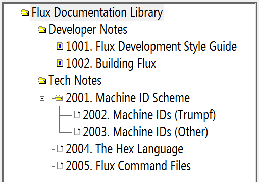
The CONTENTS key is followed by the hierarchical table of contents for the help system. This takes up the lines following the CONTENTS= key, until the next blank line (or the end of the file). Each line in the TOC is of either of the the form Topic = File, or of the form Heading. Every line must be preceded by exactly 3*N spaces, where N is the indentation level of the contents. A parent node at level N must have children only at level N+1 (do not skip levels).Lines of the form Heading will form nodes in the TOC tree that have children, but have no associated content. Lines of the form Topic = File have an associated page that is displayed when they are clicked (and they may also have children). The image above shows how this particular TOC is rendered when viewed in the compiled help.
The formatting of the CONTENTS section is quite strict - make sure to start each line with exactly N*3 spaces (no tabs) and ensure there are no blank lines - that will mark the end of the TOC. For examples, see the FTXProj files in X:\Notes and X:\Help.
Markdown in FTX files
Basic formatting
Set text in italics by surrounding it with underscores, and in boldface by surrounding it with asterisks. Unlike conventional markdown, we never use double-asterisks or double-underscores; that detracts from the clarity of the plain-text document.
One can use simple markdown to set text in _italics_ or to set
text in *boldface*, as this shows.
|
However, this will ignore the use of * in mathematical expressions like
3 * sin(40) * cos(30), or the use of underscores in variable names like
AUTO_INDEX_PTR. And as you can see, just using a blank line of text starts
a new paragraph.
A blank line in the input text becomes a paragraph break. So that renders as:
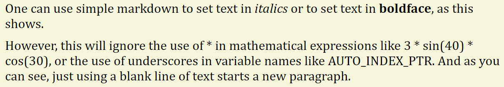
For the rest of this document, we are going to use the gray-background, monospaced text o display the FTX input and the formatted text with the serif-font and beige background to display the final rendred results.
Displaying code
A documentation system for use in software often has to display source-code or scripts. A code block starts by simply ending the previous paragraph with a double-colon, as shown
Use a command-line similar to the following to run Flux. Note that you should
set the FluxData folder to match the actual installation location, and you should
remember to end that environment variable with a slash::
|
cd c:\Flux\Bin\
set FLUXDATA=C:\Flux\Data
start Flux
|
When Flux is finished, the results can be found in a different folder.
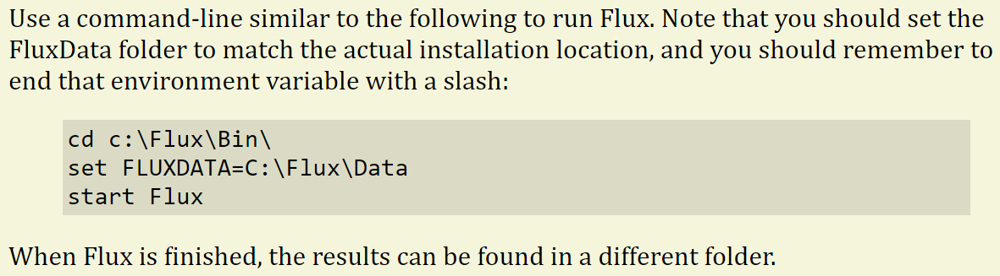
The code block ends when the next blank line is found.
Language specifiers
An optional language specifier in parenthesis can follow after the double-colon2, indicating which programming or scripting langauge is being used in the code-block. This will be later used by FTex to do proper syntax-highlighting for that language3. The languges supported now are: hex, cs, curl, ini
In addition, the pseudo-language out is used to signal to FTex that the block that follows is the output of a command or program. This is usually typeset with a different color background. The pseudo-language rev is used to specify a block that contains revision information for a document; this is usually typeset with a small font (see the section on headings for an example of this).
If you need a blank-line within the code-block itself, that is indicated by having a line with just a vertical separator (pipe-symbol) in it - that will get rendered as a blank line.
Functions can recursively call themselves, as this example shows:: (hex)
|
def fibo (int n) : int {
if (n < 3) return 1;
return fibo (n - 1) + fibo (n - 2)
}
|
"fibonacci:~"
for i = 1 to 10
" {0}~", fibo (i)"
The example above shows the usage of a languge specifier and the use of a pipe-symbol to introduce a blank-line within the code. It renders thus:
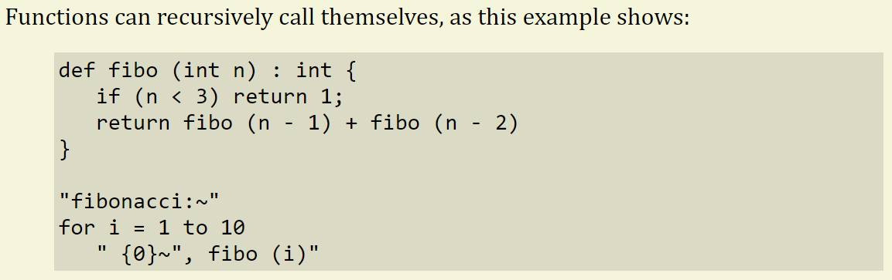
Document titles
A document title is specified by encosing the title line with two lines of hyphens. It is very common that a revision history follows a document title (at least for internal documents), and this is just a code-block with the special language rev. Here is an example
---------------------------
1005 (O) Bend Area Modeling
---------------------------
::(rev)
V1 (o) 20130606 (o) AV
V2 (o) 20140422 (o) AV (o) Added some documentation on *SequenceSign*
|
This document explains about how the bend-deformation areas are modeled in Flux.
A model is divided into two types of _areas_; the invariant, non-deforming areas
are called *Planes* while the deformable areas are called *Flexes*.
And here is how that renders:
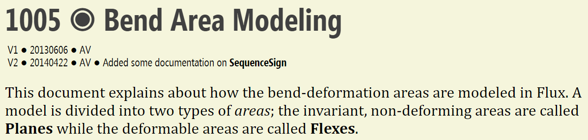
There are some special characters in the FTX code above (O) and (o) - these render as a large bullseye and as a smaller rounded bullet respectively. See the section later in this document for a list of all the special characters.
You can see how the revision history block is rendered using small text. Further, this document title also becomes the title specified in the HTML header of the document, and shows up in the browser tab:
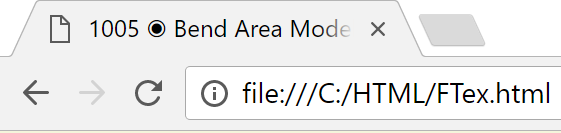
Note: It is not necessary to have a precise number of hypens in the lines before and after the heading; all FTex requires to recognize this pattern is 3 hypens. So, this is an acceptable document title
----
1005 (O) Bend Area Modeling
----
Headings
Level 1 headings are specified by underlining text with equal signs, while underlining it with hyphens produces a level 2 heading. Underlining with dots produces a level 3 heading.
Control statements
==================
Hex contains various types of control statements.
|
If/Else Statement
-----------------
An *if* statement has a conditional expression controlling whether the _if_ clause is
executed or the optional _else_ clause is executed. It is customary to enclose the
condition within parentheses, but this is not really necessary.
|
For loops
---------
Flux has two types of for loops. Both are described below
|
For-to loops
............
For-top loops iterate a control variable from a starting value to an ending value.
In each iteration of the loop, the control variable is incremented or decremented
(based on the optional _step_ parameter).
|
For-each loops
..............
For-each loops set a control variable to each item from a collection. A *foreach*
loop can iterate through any kind of collection using identical code, and so it is
useful when the collection type may change.
The blank line after the ==== etc is optional, and FTex ignores it if you specify it. The FTX code above renders like this:
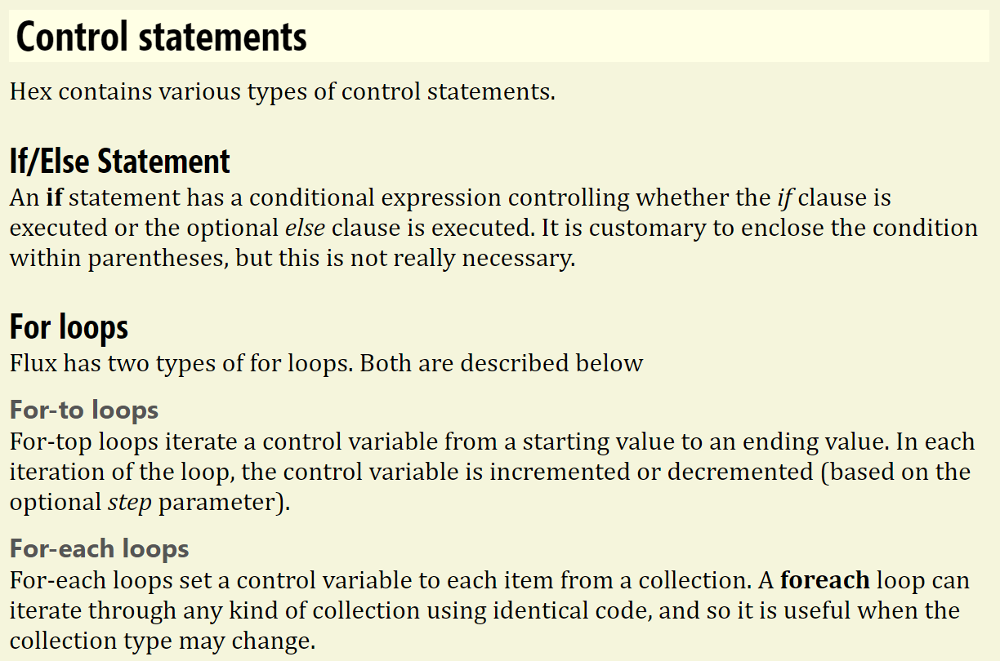
Unordered lists (bullet points)
An unordered list is produced by prefixing each line with an asterisk followed by a space.
Flux is an Integrated Sheet-metal CAM application. Flux can generate code for a large
number and variety of sheet-metal machinery, including:
|
* Laser cutting machines
* Punch presses (magazine and turret)
* Combination (laser + punch) machines
* Press-brakes
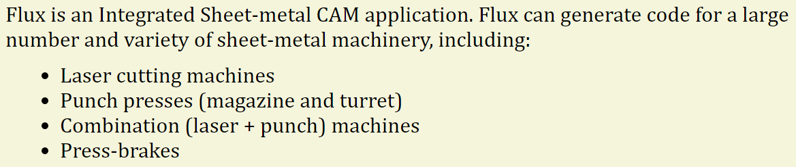
Items spanning multiple lines
In the more general case, the text within a list item may stretch to multiple lines. If so, remember to indent each line to the same extent so FTex can recognize these as continuations of the same item. Use the \n sequence to introduce a line-break within an item, and the sequence \n\n to introduce a paragraph break within an item.
Here is a more extended example.
* This is a very long item.
That has been broken into multiple lines.
All lines will get fused together into a single paragraph.
Remember to indent each line.
* And one can even introduce line breaks within
a list item:\n
One\n
Two\n
Three
* And one can introduce paragraph breaks inside a list item.\n\n
As we demonstrate here.
|
And finally, we are back at the body-text level of the document. We simply
need a line with no indentation to get out of the list.
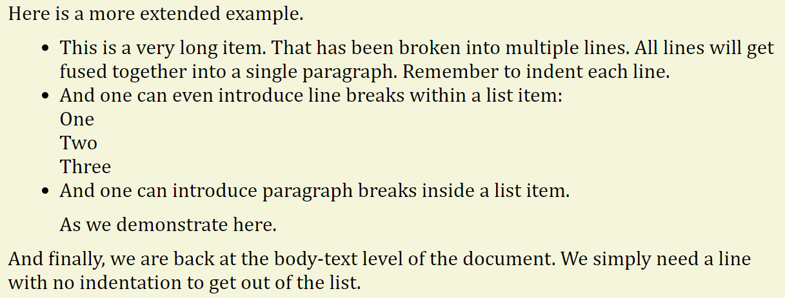
Ordered lists (numbered points)
Using + instead of * produces an ordered list
To install Flux:
|
+ Download and install the pre-requisites
+ Install the .Net framework 4.6
+ Install MetaCAM
+ Install the latest Flux
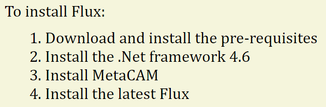
Nesting lists
You can nest lists by indenting each level by exactly two spaces. Note that you can nest an ordered list within an unordered list or vice versa
It is possible to nest lists two deep:
|
* Create the sequence
* Examine the base-planes
* Eliminate the flanges
* Pick the optimal order
* Select tooling
* Pick a punch
* Pick a die
* Generate outputs
+ Generate NC code
+ Generate a setup sheet
+ Generate the time study
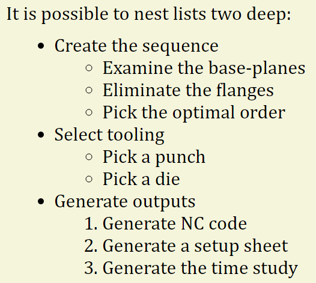
Tables
Tables are created in FTX by using hypens and vertical dividers to. First, there is a header line that contains the column headings seprated by | symbols, followed by a horizontal rule made of - and | characters. This pattern is what FTex recognizes as the start of a table.
Parameter | Meaning
----------|--------
input | The full filename (with path) of the input DXF file
name | The name to be assigned for the part
material | The MetaCAM material to be assigned for the part
thickness | The thickness (in mm) to be assigned to the part
output | The full filename (with path) of the output PDG file
Following the header line are a number of actual rows, each one using the | symbol to seprate the different columns of text. Here's how this simple example from above is rendered:
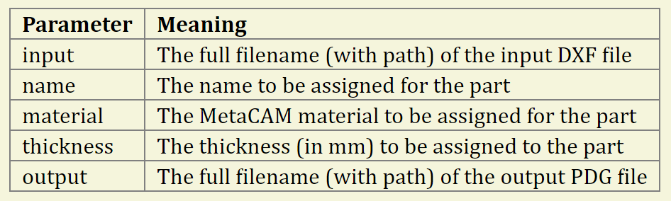
Specifying column alignment
The horizontal rule line is used to specify the column alignments as well. If a particular column's rule ends with : then that column is right aligned. If it begins and ends with :, that column is center aligned. Also, for a complex table, it is possible that the text of each cell may itself span over multiple lines. That is fine, but remember to indent each of those continuation lines; else it will start new row in the table.
Parameter | Example | Meaning
---------:|:-------:|-------
Command | DXFtoPDG |
Input | C:\Data\00\Input.dxf | The name of the input DXF file
Grain | H | The part grain. A value of *H* or *Horizontal* sets a horizontal grain, and
a value of *V* or *Vertical* sets a vertical grain.
PartRawMaterial | Steel | The material that should be assigned when this is saved as a PDG file
NoDelete | 0 | If set to 0 (the default), the Part that was loaded is
discarded after we have saved it to DXF. If this is set to 1, then
the Part is stored as the global CurrentPart.
As you can see in the example above, FTex does not care about whether the | signs are all aligned, so you don't have to bother too much about that. Just remember to indent the continuation lines of a row so FTex does not get confused. Here's how that table renders:
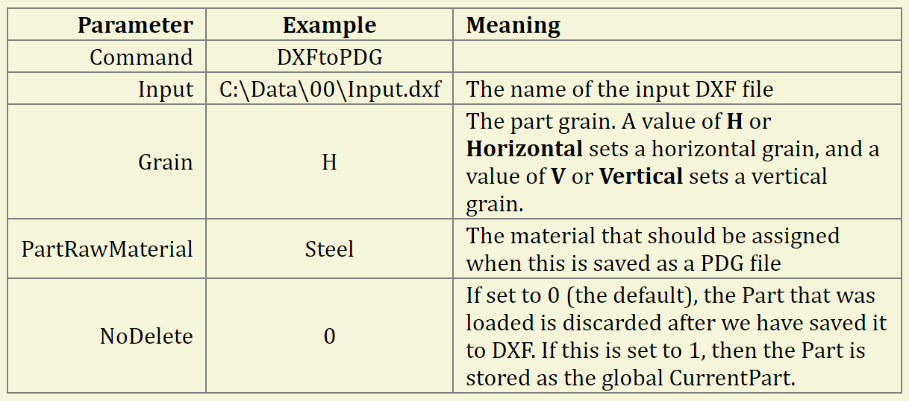
Setting column widths
You can control the relative widths of the columns also by using the horizontal rule row. If you specify some numbers in each of the horizontal rules, those are taken as relative column widths. For example
Token | Value | Meaning
-----3------|---2---|----4---
Null | 1 | A null pointer or reference
DerivedType | 3 | An object follows, that is of a derived type
DictType | 9 | A type descriptor for a dictionary type follows
EnumType | 10 | A type descriptor for an enumeration type follows
Epilogue | 11 | File epilogue follows (object count, EOF)
In this example, the columns widths are set in the ratio 3:2:4, resulting in a table like the one below.
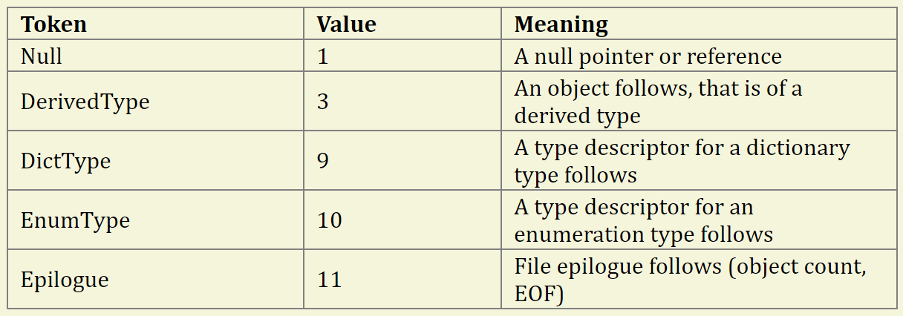
Note: If you are using this style, remember that there should be at least 3 hyphens before the column width specifier for FTex to recognize this as a horizontal rule.
Most often, you will not need to specify the column widths in this manner; FTex will then pick column widths to result in a more natural looking table. For example, here is the same table as above, without any column width overrides:
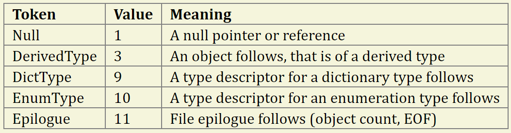
Grouping rows
You can draw a thicker line between some rows of a table by introducing a line of just hyphens, as below
Code | Machine | Display Name
-----|---------|--------------
120015 | Trubend 5085 (4-axes) B23 | 5085 4A B23
120016 | Trubend 5085 (5-axes) B23 | 5085 5A B23
120017 | Trubend 5085 (6-axes) B23 | 5085 6A B23
-------
120055 | Trubend 5130 (4-axes) B23 | 5130 4A B23
120056 | Trubend 5130 (5-axes) B23 | 5130 5A B23
120057 | Trubend 5130 (6-axes) B23 | 5130 6A B23
-------
120071 | Trubend 5170 (2-axes) B23 | 5170 2A B23
120073 | Trubend 5170 (4-axes) B23 | 5170 4A B23
120075 | Trubend 5170 (5-axes) B23 | 5170 5A B23
120077 | Trubend 5170 (6-axes) B23 | 5170 6A B23
In the example above, there are thicker lines between the three different machine families:
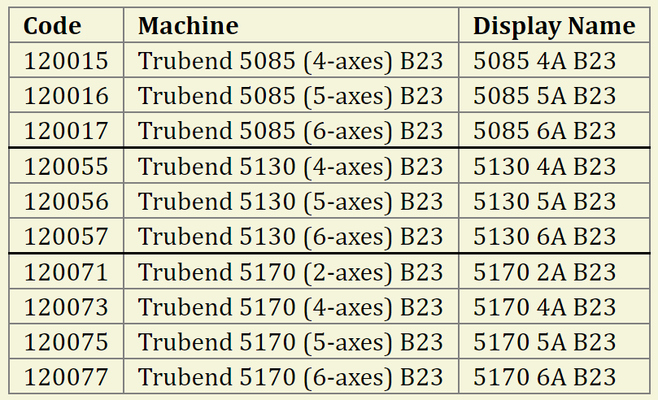
Hyperlinks
Links in FTex files are created by enclosing the link text in square brackets, followed by the actual link target in parenthesis
The Hex language has many [control structures](Hex/ControlStructures) that
can be used to write code easily. These contrast with the control stuctures
of the [C# language](https://en.wikipedia.org/wiki/C-sharp).
The first link does not have any link protocol or file extension, and so is treated as a link to another FTX document within the same project. The path in parenthesis is always a relative path (relative to the document in which the link is embedded). The second link is a link to an external site. Here is how these links render:
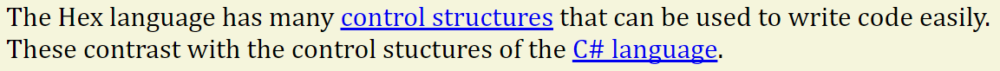
When a hyperlink appears in some locations (like in a table), FTex automatically removes the underline to make it more legible. For example
Note | Description
---3--|-----7------
[Flux Style Guide](Dev/1001.FluxDevStyleGuide)
| Explains the coding style guidelines for Flux development
[Building Flux](Dev/1002.BuildingFlux)
| Setting up the build environment for Flux
[Au Files Encoding](Dev/1003.AuGoldEncoding)
| Explains the binary encoding for Au (Gold) files
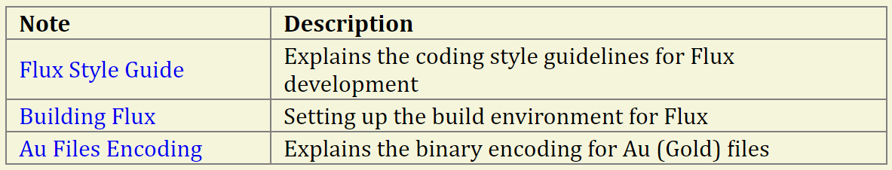
Bookmarks
In addition to hyperlinking to pages, FTex also allows the user to navigate to specific regions within the page, through the use of HTML bookmarks. Currently, bookmarks in FTex files can be associated only with [[1007.FTexSystem#Headings|headings]] sections of the page. It is done so by preceding the heading text with a '#', followed by the case-sensitive name of the bookmark, without any spaces in between
#CtrlClick Ctrl+Click copy
==========================
It is quite common for the CAD user to want to create multiple copies of certain standard in 2D.
This will be rendered as :
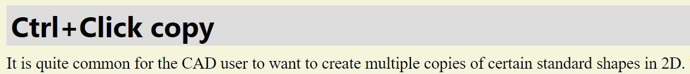
Doing so has now created a bookmark called CtrlClick, specific to that page. To navigate to this bookmark from anywhere, we create a markdown similar to the one used for [[1007.FTexSystem#Hyperlinks|hyperlinks]]. The only difference is that that the text specifying the link to the relative path/external site will now end with a '#', followed by the name of the bookmark
This supports [Ctrl+Click](StdShapes#CtrlClick) mode and [Keyboard-Completion mode](StdShapes#KeyboardInput)
StdShapes is the relative path to the html file containing the bookmarks named CtrlClick and KeyboardInput. Here is how this text will render:
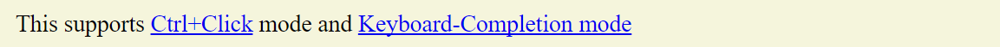
Inserting images
An image is inserted using syntax very similar to that used for a hyperlink
After NC code is generated, the code generation icon turns gray and the
text in the tooltip changes to reflect this fact:
|
[Code Generated](./img/code-generated.png)
In fact, FTex figures out this is an image simply by looking at the link target and figuring out that it is an image file (this means that you cannot actually insert a hyperlink to an image file). Here's how the FTX fragment above renders:
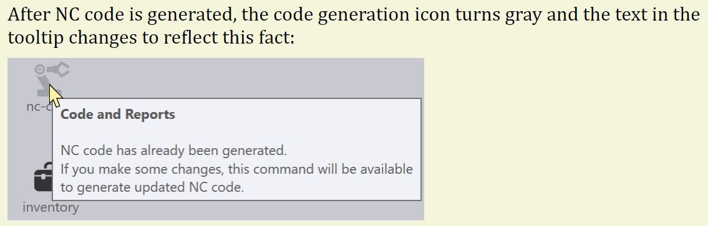
The text in the square brackets is the alt text for the image (the text that is displayed in the tool-tip, or read out if the page is being rendered by a narrator).
Image captions
To add a caption to an image, include the caption text in double-quotes just after the link
This is the way we connect a Plane to a Flex in the 3D modeler:
|
[Connector](img/1005.8.png "Plane-Flex Connection")
|
Similar rules are used when connecting two flexes directly. The socket of
one Flex matches to the tail coordinate system of the other one and thus
the two get bound.
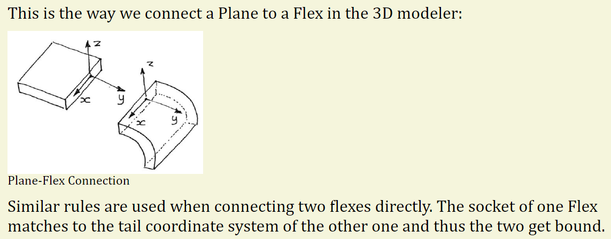
Floating an image right
You can use a colon at the end of the alt text (the part within square brackets) to indicate that the image should be floated and right-aligned . The text will then flow around the image. For example
[Bend Panel:](./img/edit-bend.png)
The Bend panel looks like the image alongside. This has some settings and
operations for working on the bend.
|
Operations
..........
* The *Position* input is used to set the X-location of the bend
* The *Flip Part* button is used to flip the bend upside down
* The *Angle Measure* button brings up the [Angle Measurement](AngleMeasure)
panel, which allows you to control the angle measurement settings
for the bend
* Clicking the *Skip Bend* button marks the bend as skipped
|
Settings
........
* Turn on *Coining* to process this as a coining bend. Note that this may
require you to then change the punch and die to support coining.
* Turn on *Pre-bending* to add a [pre-bend](../FAQ/Prebend) to this bend and
to then edit the pre-bend angle
And this is how that renders:
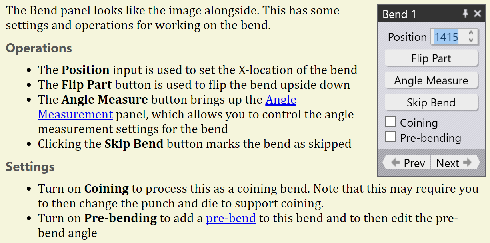
Footnotes
Footnotes are included in FTex by using the marker [^] to indicate where the footnote should link to. Subsequently, the actual expansion of that footnote is provided as a separate paragraph that starts with the marker [^]:, followed by a space. The links connect up to the foot-notes in sequence, so you can provide the text for the footnotes immediately following the paragraph.
Flux ships with multiple technologies already installed and configured,
and these include Bend as well as Fold[^]. There are a large number of
OEM machines[^] supported and all of these can be viewed by looking through
the machine database option.
|
[^]: We use the terminology *bend* to indicate press-brakes, and the
terminology *fold* to indicate panel benders in Flux.
|
[^]: The actual set of machines that are available in your Flux installation
will depend on the installation region, as well as on whether you purchased
Flux from Metamation or from an OEM.
|
You can use the [Workflow](workflow) panel to quickly switch between
technologies and you can also use the shortcut keys[^] to navigate to
a particular panel and page in Flux.
|
[^]: You should find a poster with all the shortcuts in your Flux package.
There are three foot-note anchors in the text and there are 3 paragraphs that start with the special foot-note header [^]: These anchors are connected to these footnote paragraphs on a first-to-first mapping. This is how the main body of the text renders:
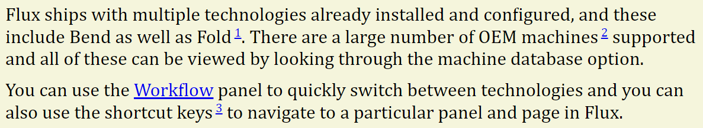
Note how FTex has auto-numbered these anchors in the text. The actual footnote paragraphs do not appear in the main flow of the text. They are (as expected), found at the bottom of the document, separted from the main content with a horizontal rule.
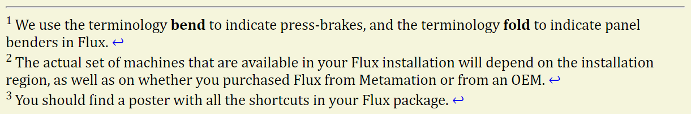
Each footnote ends with a return arrow that, when clicked, takes you back to the anchor location so you can continue reading.
Special characters
There are several FTex sequences that get replaced with special charaters when rendering
(O) is a *bullseye*\n
(o) is a *bullet*\n
(E) is a *euro* symbol\n
(Rs) is a *rupee* symbol\n
(R) is the *registered* sign\n
(tm) is the *trademark* symbol\n
(c) is the *copyright* symbol\n
(deg) is the *degree* symbol\n
(+-) is the *plus-minus* symbol\n
(mu) is the *micro* symbol
Note how we use the \n in this paragraph to issue line-breaks.
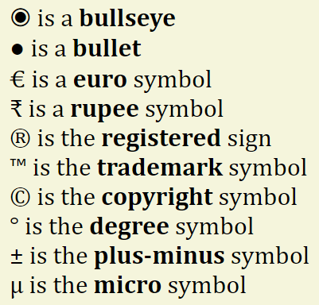
How this document was generated
This documentation page for FTex was, of course, also generated using FTex. We created a small FTex project that contains all the examples used in this document, and created a special style sheet - this style sheet changes the background color, switches to a serifed font for contrast, and sets the page-width narrower. You can find this complete project file in X:\Notes\FTex.
The project file was rendered and the images used in this page were all sections snap-shotted out of the rendered output and saved. Thus all the content with the beige backgrounds above are images (since it is not possible with FTex to render different parts of a page with different style sheets).
Converted from the FTex source
Notes/Dev/1007.FTexSystem.ftx— see [[Flux Notes]] for the index.
-
This should be pronounced F-Tech in keeping with the pronounciation of TeX↩
-
FTex will handle the :: intelligently - if it is preceded with a period or question mark, it will be removed altogther. Else, it will be output as a single colon.↩
-
No such syntax highlighting is implemented yet; this is for the future↩